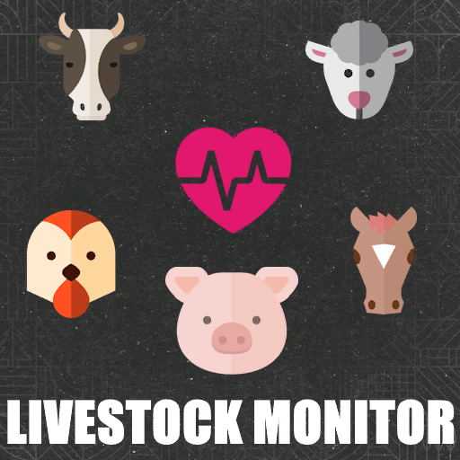

The Author
I'm Redentore, an old school gamer born in 1981 who discovered the joy of modding with Farming Simulator 25.
I enjoy building things and seeing them come to life — whether it's a mod, a website, or anything else. That's why I decided to create this site to collect the mods I've made.
I work in an advanced technical support helpdesk, and that shapes the way I approach modding: methodical, detail-oriented, and focused on making things that actually work well.
Sono Redentore, un old school gamer classe 1981 che ha scoperto il mondo del modding con Farming Simulator 25.
Mi piace costruire cose e vederle realizzate — che sia una mod, un sito web, o qualsiasi altra cosa. Per questo ho deciso di creare questo mio sito in cui raccogliere le mod che ho realizzato.
Lavoro in un helpdesk tecnico avanzato, e questo influenza il mio approccio al modding: metodico, attento ai dettagli, orientato a fare cose che funzionano davvero bene.
My Mods for FS25
🇬🇧 A complete in-game price monitoring system. Track stock levels and selling prices for all product types, set custom alert thresholds, and never miss the right moment to sell.
🇮🇹 Un sistema completo di monitoraggio prezzi in gioco. Configura soglie di alert personalizzate e non perdere mai il momento giusto per vendere.

🇬🇧 This mod is currently in development.
🇮🇹 Questa mod è attualmente in fase di sviluppo.